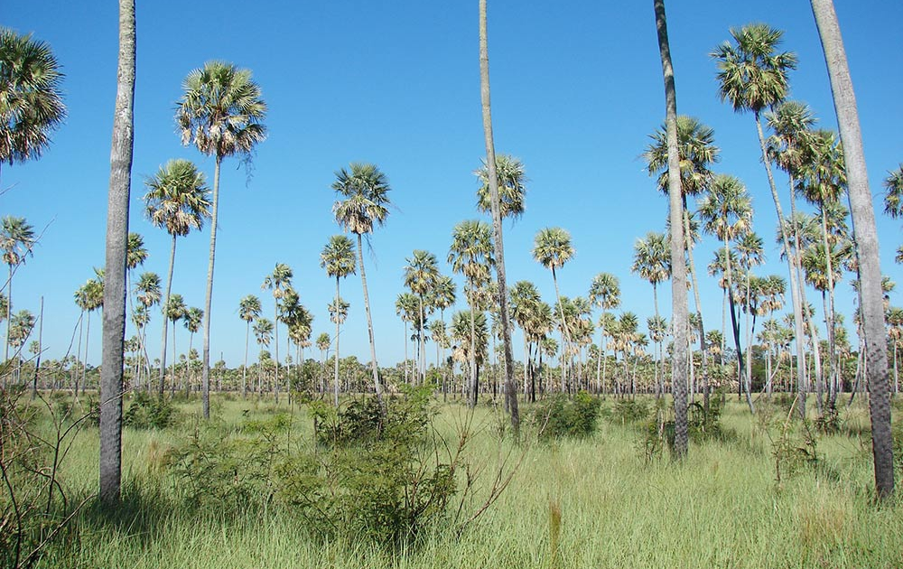
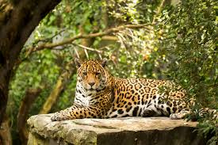
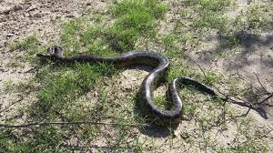

Clima y Caracteristicas Generales
El Chaco Húmedo es una región de clima subtropical húmedo, con abundantes lluvias que oscilan entre 700 y 1.400 mm anuales, concentradas principalmente en los meses de verano. Este régimen de precipitaciones estacionales permite la formación de ríos, lagunas y humedales, que caracterizan la hidrografía de la zona. Los veranos son calurosos, con temperaturas que superan los 30°C, mientras que los inviernos son más suaves, con temperaturas entre 15°C y 20°C. El río Paraguay, el río Paraná, el río Salado y el río Pilcomayo son los principales cursos de agua que atraviesan esta región, vitales para su ecología. Los humedales, como el Bañado La Estrella, desempeñan un papel crucial en la regulación del ciclo del agua, almacenando y liberando agua según la temporada, lo que favorece la biodiversidad. Este clima y su red de cuerpos de agua permiten una vegetación más densa y diversa que en el Chaco Seco, sustentando una rica variedad de flora y fauna.
Flora
Árboles: Especies como el lapacho, la caoba, el guayabo y el guaraní son comunes. Plantas epífitas: Como orquídeas y bromelias, que crecen sobre otros árboles. Arbustos y plantas herbáceas: Que proporcionan hábitats y alimento a diversas especies. Lianas y enredaderas: Que son características de la selva paranaense.
Ecosistema
El Chaco Húmedo es una subregión dentro del Gran Chaco, situada en el noreste de Argentina, abarcando parte de las provincias de Chaco, Formosa, Santiago del Estero, Santa Fe y el noreste de Córdoba. Se caracteriza por un clima subtropical con una marcada estacionalidad en las lluvias, predominando las precipitaciones en verano, lo que diferencia a esta zona del Chaco Seco. Es una ecorregión muy biodiversa y de gran valor ecológico.
Yaguareté
Serpiente
Tucan